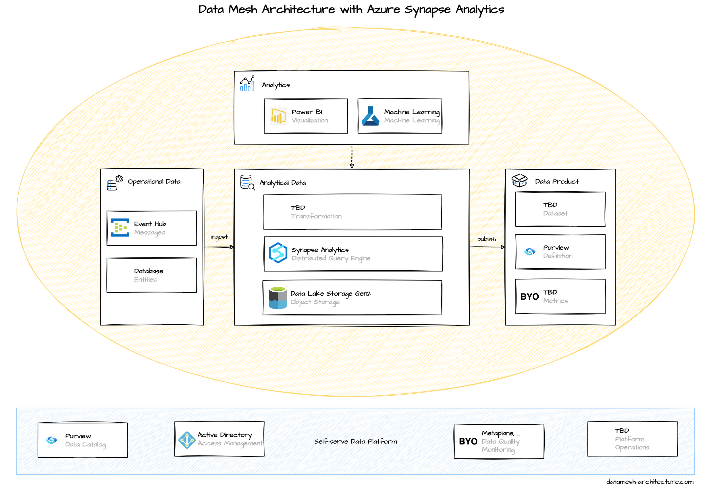

Microsoft offers Azure Synapse Analytics, along with both Data Lake Storage Gen2 and SQL database, as the central components for implementing a data mesh architecture.
We evaluated the Azure tech stack, especially the services around Azure Synapse Analytics. We like the idea of an integrated environment to manage and analyze data and Microsoft even provides data mesh specific guidance in their Cloud Adoption Framework.
To be honest, we struggled a bit during this evaluation, because we expected a more supportive developer experience. The services are convoluted: What storage or database should we use to store analytical data? The SQL database or lake database that are integrated into the Synapse Workspace, or should we use an external object storage with Parquet files that we link into Synapse Analytics? When to use Azure Blob Storage, when to use Azure Data Lake Storage Gen2? Some features are supported by the built-in serverless SQL pool, some features require a dedicated SQL pool. We had similar experiences with implementing transformations, data sharing, and visualization—there is no straightforward way to accomplish these tasks. In addition, due to recent rebrandings on Azure services, many tutorials on the internet are outdated.
Our learning is that you should not underestimate the efforts for upskilling the domain teams to use Azure Synapse Analytics as a data platform. Invest in an enabling team that guides and supports domain teams on their journey implementing data mesh.
We assume that many of our difficulties are due to a lack of extensive experience with the platform. We are open to chat with Azure experts who might know more than we do - feel free to reach out to us.
If you're on Azure, we currently would recommend to consider Snowflake deployed to Azure, or, if many of your domains do machine learning, have a look at Azure Databricks.